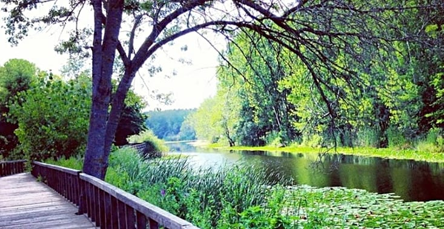
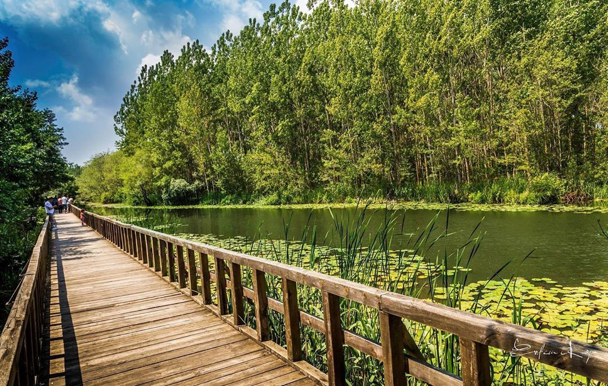
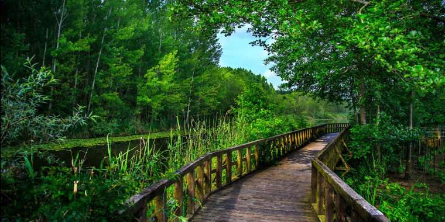

Acarlar Longozu, Sakarya'nın kuzeyinde Karasu ve Kaynarca ilçeleri arasında yer alan Türkiye'nin tek parça halindeki en büyük longoz (subasar) ormanı. Genişliği 250–1250 m, uzunluğu 7,5 km'dir. Oluşumu açısından tipik bir kıyı set gölüdür.
Karadeniz'le arasında 20–25 m yüksekliğinde kumullar, güneyinde ortalama 100 m yüksekliğinde alçak tepelerle sınırlanır. Sakarya nehrinin 6 km batısında yer alır, fazla suları Okçu deresiyle Sakarya Nehri'ne dökülür. Ulaşım açısından
Karasu ile arasında yaklaşık 26 kilometre, Sakarya ile arasında yaklaşık olarak 50 kilometre mesafe vardır. Çevresinde Karasu'ya ait 5 köy: Denizköy, Karamüezzinler, Üçoluk, Taşlıgeçit, Camitepe, Kaynarca'ya ait 3 köy; Turnalı, Büyükyanık,
Birlik köyleri bulunur. Türkiye'de nadir bulunan subasar orman ekosistemiyle 1998 yılında Bursa Kültür ve Tabiat Varlıklarını Koruma Kurulunun aldığı kararla ile 1. derece Doğal Sit Alanı olarak koruma altına alınmıştır. Adapazarı
Toprak Su Teşkilatı 1971 yılında gölün gideğeni olan Okçu deresini genişleterek kanala dönüştürmüştür. O zamandan günümüze gölün alanı %40’ı (9.443 km2) küçülmüştür[1]. Gölde bir kısmı endemik olan bitki ve hayvan türleri yaşar. Özellikle
göçmen kuşların üreme ve kışlama alanıdır. Orman alanında dişbudak, kızılağaç, kayın, karaağaç türleri yaygındır. Çocuk felci tedavisinde kullanılan Göl soğanının ticareti Kaynarca köylüleri tarafından yapılmaktadır. Longozda yayın,
kızılkanat, sazan balıkları, çevrede tavşan, tilki, yaban domuzu, gelincik, doğan ve sincap yaşar[2]. Longoz Sakarya'daki tek Yaban Hayatı Geliştirme sahasıdır. Su meneksesi (Hottonia palustris) yurdumuzda endemik bir tür olarak yalnızca
Acarlar Gölü’nde bulunur. Ayrıca göl lalesi (Leucojum aestivum) gibi bazı nadir tur de Acarlar Gölü’nde bulunmaktadır.[3] Longoz 2009 yılında hazırlanan planla Sulak Alan olarak tescillenmiş ve planlaması yapılmıştır.[3] Longozun Karasu
kısmında yürüyüş yolu, restoran, sandal, deniz bisikleti, piknik ve park alanı gibi düzenlemeler yapılarak Eko-turizme kazandırılmaya çalışılmaktadır.



Genel Fiziki Özellikleri
Acarlar Longuzu, genelde güneyinden katılan küçük derelerle beslenmektedir. Mevsimlik akışa sahip bu dereler göl alanını beslerken, fazla sular doğuda Okçu Dere vasıtasıyla önce Sakarya Nehri’ne, oradan da Karadeniz’e ulaşır. Karadeniz’e
bu kadar yakın bir kıyı alanında şekillenen Acarlar Longozu’nun oluşumu ,eski bir kıyı ovası tabanını kat eden akarsuların zamanla önünün kıyı kumulları tarafından tıkanmasıyla, geride 33 meydana gelen bir göllenme ile açıklamak mümkündür.
Bununla birlikte kıyı kumullarının oluşumunda ,kıyı oklarının zamanla büyüyerek set oluşturmalarını da bu sürecin içinde değerlendirmek gerekir. Böylece Acarlar Longozu ve içinde yer alan göl aynı zamanda bir lagün karakteri de taşımaktadır.
İlk zamanlar gölün fazla suları, kıyıdaki eski Denizköy civarından bir gidegen vasıtasıyla, bugünkünden çok daha yakın bir mesafeden Karadeniz’e boşalırken, zamanla bu gidegenin de önünün kumullarla tıkanmasıyla, kıyıya paralel uzanan
kumul sırtlarını takiben, doğuya doğru Sakarya nehri ağzına kadar ötelenme ile yeni bir gidegen yatağı meydana gelmiştir. Netice itibarıyla Acarlar Longozu göl ortamı, kıyının gerisinde uzanan kumul setlerinin arkasındaki çukur alanın
sularla kaplanması sonucunda oluşmuştur. Acarlar Longozu’nun kuzey sınırını oluşturan ve Karadeniz’le bağlantısını kesen kıyı kumulları, tepeler ve sırtlar halinde uzanmaktadır. Yer yer 25 – 30 metreyi bulan tepeler ve 50 metreye ulaşan
sırtlar ayrı bir ekosistemin de kaynağını oluşturmaktadır. Kıyıda yer alan kumulların hakim rüzgârlar doğrultusunda hareketi, başka kelimelerle aktifliği mevcuttur. Bugün halen kumul ilerlemesinin izlerini görmek mümkündür. Kıyı çizgisinden
güneye, yani Longoz'a doğru ilerledikçe aktiflik yerini duraylığa bırakmıştır. Fakat gerideki bu iki hareketsiz kumul sırası, günümüzde insan etkisiyle (özellikle yapılaşma ve karayolu) duraylılığını yitirip tekrar aktif hale geçme
tehlikesiyle karşı karşıyadır. Acarlar Longozu’nun güney kesimi ise yükseltisi 100-150 metre arasında olan tepelerle çevrilidir. Acarlar Longozunu, birçok göl veya sulak alandan ayıran ve ülkemizde çok az sulak alanda karşımıza çıkan
özelliği; göl tabanının büyük ölçüde (tahribattan kurtulabilenler) geçilmesi zor, yoğun bir orman formasyonu ile kaplı olmasıdır. İklim özellikleri açısından ele alındığında Acarlar Longozu ve çevresi, Karadeniz Termik Rejimi'nin etkisi
altındadır. Bu rejimde; denizel etkiler kuvvetli olup, yazlar fazla sıcak geçmez, kışlar da çok soğuk olmamaktadır. Sıcaklık değişimleri nispeten düzenlidir. Buna göre sahanın yıllık ortalama sıcaklığı 13.60 santigrattır. Aylık ortalama
en düşük sıcaklık 6.00 C olup, Ocak ayında görülmektedir. Aylık ortalama en yüksek sıcaklık ise 21.90 C ile Temmuz ayında görülmektedir. Ortalama sıcaklık değerlerine bakıldığında mevsimler arasındaki sıcaklık farkının çok fazla olmadığı,
mevsim geçişlerinin de sert olmadığı görülmektedir. Yıllık ortalama nisbi nem ise % 81’dir. Yıl içerisinde ortalama, nisbi nem değerleri % 77 ile % 83 arasında değişmekte, yıl içinde belirgin bir artış veya azalış olmamaktadır. Karadeniz
kıyısında yer alan sahada nemlilik oranı da denizel etkiden dolayı yüksektir. Sahada yıllık ortalama yağış 948.0 mm’dir. Ortalama max. yağış 118.8 mm ile Ocak ayında, ortalama min. yağış 46.4 mm ile Mayıs ayında görülmektedir. Yıllık
yağışların % 50’sinden fazlası kış ve sonbahar mevsimlerinde düşmektedir. Yağışlar büyük ölçüde yağmur şeklindedir. Yağış özellikleri incelendiğinde Karadeniz Yağış Rejimi'nin etkili olduğunu görülmektedir. Her mevsim yağışlıdır. Sahada
hakim rüzgâr yönü Rubinstein formülüne göre SW ve NNE’dur. Kara ve denizlerin yıl içinde farklı ısınması sonucunda ilkbahar ve yaz aylarında Güneydoğu rüzgârları hakim iken sonbahar ve kışın güney sektörlü rüzgârlar daha etkilidir.
Yağış ve sıcaklık değerlerinin ele alınarak analize tabi tutulduğu Thornthwaite, iklim sınıflamasına göre sahanın iklimi için B, B’2, sb’4 harfleriyle ifade edilen nemli, ikinci dereceden mezotermal (orta sıcaklıkta) su noksanı yaz
mevsiminde ve orta derecede olan, denizel koşullara sahip iklim tipine girer.[4]
Yapısal Jeoloji
Bölge, tektonik açıdan oldukça aktif bir zonun (Kuzey Anadolu Fay Zonu) kuzeyinde yer alır. Bölgede etkin olan sıkışma tektoniğinin Orta Eosen sonrasına kadar devam ettiği ve Orta Eosen yaşlı birimleri kıvrımlandırdığı gözlenmektedir.
Bölgede izlenebilen en önemli tektonik hat ;Kocaali-Karasu güneyinde yer alan KB-GD doğrultulu, düşey atımlı fay hattı olup, fay hattı proje alanının yaklaşık 10 km Güneydoğu'sunda yer almaktadır. Bu hat en genç olarak Alt-Orta Eosen
yaşlı Çaycuma formasyonunu etkilemiştir. Adı geçen fay hattı, Kocaali güneyindeki Çakal dağı ve çevresinde çatallanarak bir mekik yapısı oluşturmuş ve mekik yapısının ortasında Çakraz Formasyonu yükselerek mostra vermiştir. Düzce fayı
inceleme alanın yaklaşık 54 km Kuzey Anadolu Fay Zonu ise yaklaşık 60 km güneyinde yer almaktadır. Bölgede gözlenen bir diğer önemli tektonik hat ise Karasu güneyindeki Yuvalıdere köyünün kuzeyinden geçen ve yaklaşık olarak doğu-batı
doğrultulu, kuzeye eğimli ters faydır. Bu fay hattı ise inceleme alanın yaklaşık 14 km güney- güneydoğusunda yer almaktadır. Ayrıca bu ters fay hattı kuzeybatı-güneydoğu doğrultulu, sağ yanal atımlı faylar tarafından yırtılmıştır.[5]
Fauna
Acarlar Longozu’nun da içinde bulunduğu Karadeniz kıyısında geniş bir alan,her şeyden önce coğrafi konumu itibarıyla avifauna açısından çok zengindir. Çünkü bu alanlar Batı Palearktik sahayı güneydeki kışlama alanlarına bağlamaktadır.
Weser nehrinden, Ural dağlarına kadar olan batı – doğu yönlü uzanan bölgede kuluçkaya yatan milyonlarca kuş; hem Türkiye’ye, hem de daha güneydeki kışlama alanlarına varabilmek için, sonbahar aylarında ülkemiz topraklarından geçerler
veya konaklarlar. İlkbahar mevsiminde ise kuzeye daha az yoğun bir göç gerçekleşir. Mevsimlere ve yıllara göre değişen kuş dağılışı ,kışın kıyı kesimlerde yoğunlaşır. Acarlar Longozu’nun Anadolu üzerinden geçen iki önemli göç yolunun
birisi üzerinde bulunması bu sahayı göçmen kuşlar için eşsiz kılmaktadır. Balıkçıl türlerinin, dalgıçların, ibislerin, karabatakların, yaban ördeklerinin ve bataklık kuşlarının birçok türünün; deniz ve balık kartalının bu bölgede konakladığı
ve bir kısmının da kuluçkaya yattığı belirlenmiştir.[4]
Flora
Acarlar Longozu’nun da içinde yer aldığı Avrupa-Sibirya Bitki Coğrafyası Bölgesi; Gürcistan sınırından başlayıp, Karadeniz’in denize bakan yamaçlarını kapsayacak şekilde, Bulgaristan sınırına kadar olan 1500 km’lik bir alanı kapsar. Bu
alan aslında çok büyük bir bölge olan Avrupa Sibirya Bölgesi’nin en güney sınırını oluşturur. Acarlar Longozu, orman ve sulak alan ekosistemlerinin tüm özelliklerinin iç içe geçmesi nedeniyle flora ve fauna açısından oldukça zengindir.
Oseyanik iklimin etkisiyle alanda; kayın, gürgen, meşe, dişbudak ve kızılağaçların hakim olduğu karışık yaprak döken orman vejetasyonu hakimdir. Alanda 12 adet endemik bitki türü tespit edilmiş olup, alanda endemizm oranı % 4,9’dur.
Bu oran Türkiye florası ortalamasının oldukça altındadır. Bunun en önemli sebebi; alanın antropojen karakterinin yanı sıra önemli bir kısmının sulak alan olmasıdır ki sulak alanlarda endemizm oranı nispeten diğer ekosistemlere oranla
daha düşüktür. Diğer en önemli faktör ise; alanın büyük oranda tarım alanı olmasından kaynaklanmaktadır.[5] Amfibiler ve Sürüngenler; Acarlar Gölü ve Longoz Ormanı ve çevresinde yapılan çalışmalar ve arazi çalışmalarla alanda tespit
edilen türler aşağıda yer almaktadır: